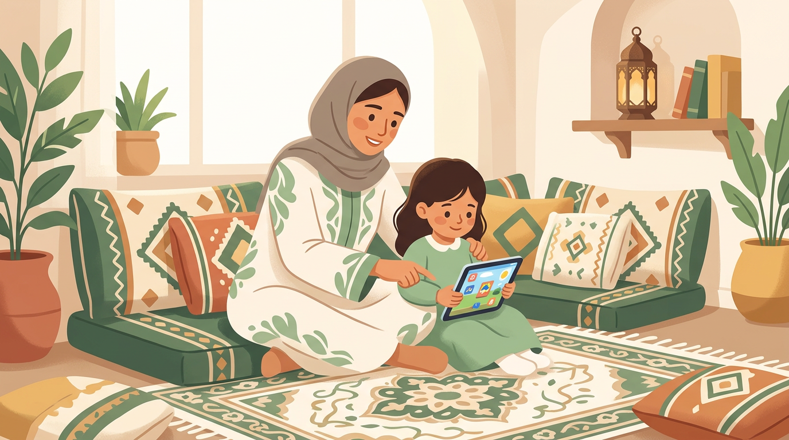

وقت الشاشة للأطفال في 2026 — الدليل الواقعي لكل أم وأب

أنتِ في المطبخ تجهّزين العشاء. طفلك ذو الثلاث سنوات يبكي ويتعلّق بك. تمدّين يدك للجوال وتشغّلين له يوتيوب. يسكت فوراً. تتنفّسين الصعداء... ثم يبدأ الذنب.
"هل أنا أم سيئة؟" — الجواب القصير: لا. والجواب الطويل في هذا المقال.
توقّف عن الشعور بالذنب — أنت لست لوحدك
حسب دراسة من Motherly لعام 2025، 49% من الأهل يستخدمون الشاشة يومياً كأداة لإدارة يومهم. يعني نص الأمهات والآباء حول العالم يسوّون نفس الشي اللي تسوّيه أنتِ.
الأرقام تقول إن الأهل يعتقدون أن 9 ساعات أسبوعياً هو الوقت المثالي للشاشة. لكن الواقع؟ أطفالهم يقضون معدّل 21 ساعة أسبوعياً. هالفجوة بين "اللي نبيه" و"اللي يصير فعلاً" هي مصدر ذنب كبير — لكنها أيضاً دليل على إن المشكلة مو فيك أنتِ، المشكلة في الواقع اللي نعيشه كلنا.
"أحتاج الجوال عشان أقدر أطبخ" — هذي جملة قالتها آلاف الأمهات. ومافيها شي غلط. السؤال الأهم مو "هل أستخدم الشاشة؟" بل "كيف أستخدمها بذكاء؟"
ماذا تغيّر في 2025-2026؟ التوصيات الجديدة لوقت الشاشة
لسنوات، كان الكلام واحد: "ساعتين بس وخلاص!" لكن الأكاديمية الأمريكية لطب الأطفال (AAP) غيّرت توجّهها بشكل كبير في 2025.
التحوّل الجديد: بدل التركيز على عدد الساعات فقط، صارت التوصيات تركّز على جودة المحتوى وطريقة الاستخدام. يعني مو كل ساعة شاشة متساوية — ساعة يتعلّم فيها طفلك الحروف العربية من تطبيق تعليمي تختلف تماماً عن ساعة يتنقّل فيها بين فيديوهات عشوائية.
هذا ما يعني إن الوقت ما يهم — يهم. لكن صار جزء من صورة أكبر تشمل: وش يشاهد؟ هل يشاهد لوحده أو مع أحد؟ هل الشاشة تاخذ من وقت النوم أو اللعب الحر؟
كم ساعة فعلاً؟ التوصيات المحدّثة حسب العمر
توصيات وقت الشاشة للأطفال حسب العمر (2026)
- أقل من 18 شهر: لا شاشة إطلاقاً — الاستثناء الوحيد: مكالمات الفيديو مع الجد والجدة
- 18 شهر - سنتين: محتوى عالي الجودة فقط، مع مشاركة أحد الوالدين
- 2-5 سنوات: ساعة واحدة يومياً كحد أقصى من المحتوى التعليمي
- 6-12 سنة: حدود واضحة متّفق عليها مع الطفل، مع أوقات محمية بدون شاشة
- المراهقون 13+: اتفاقية عائلية مع مراقبة نوعية المحتوى
الرقم الصادم: المراهقون يقضون معدّل 7 ساعات و22 دقيقة يومياً أمام الشاشات — حسب تقرير Common Sense Media لعام 2025. الأولاد أكثر بمعدّل 9 ساعات و16 دقيقة مقابل 8 ساعات ودقيقتين للبنات.
والمفاجأة؟ 75% من الأهل لا يستخدمون أي أدوات لتحديد وقت الشاشة، و51% لا يراقبون نوعية المحتوى — وفق نفس التقرير. مو لأنهم مو مهتمين — بل لأن أحد ما علّمهم كيف.
المشكلة مو الوقت — المشكلة المحتوى
تخيّل طفلين: الأول يقضي ساعة يومياً على تطبيق قرآن يتعلّم فيه الحفظ. والثاني يقضي نفس الساعة يتنقّل بين فيديوهات يوتيوب عشوائية. نفس الوقت — نتيجة مختلفة تماماً.
في الإسلام، عندنا مفهوم عظيم اسمه النيّة. كل فعل يتحوّل بنيّته. وهالمبدأ ينطبق على الشاشات بالضبط: الشاشة أداة، مو عدو. المهم كيف نستخدمها.
شاشة تبني vs شاشة تهدم
- شاشة تبني: تطبيقات تعليم القرآن والعربية، برامج وثائقية للأطفال، مكالمات فيديو مع العائلة، رسوم متحركة هادفة بالعربي
- شاشة تهدم: فيديوهات يوتيوب عشوائية بدون إشراف، ألعاب فيها عنف أو إعلانات مستمرة، تصفّح لا نهائي بدون هدف، محتوى غير مناسب للعمر
القاعدة الذهبية: اسأل نفسك ثلاث أسئلة قبل ما تعطي طفلك الجهاز: وش بيشاهد؟ كم بيقعد؟ هل أقدر أشاركه أو على الأقل أتابع معه؟ إذا عندك إجابة واضحة للثلاث — استخدم الشاشة بدون ذنب.
علامات إدمان الشاشة عند طفلك — متى تقلق؟
استخدام الشاشة شي عادي. لكن في فرق بين "يستخدم" و"ما يقدر يوقف". هذي العلامات اللي تقولك إن الموضوع تحوّل من عادة لمشكلة:
- انهيار عند سحب الجهاز: بكاء شديد أو عدوانية كل مرة تنتهي وقت الشاشة
- فقدان الاهتمام بأي شي ثاني: ما يبي يلعب، ما يبي يطلع، ما يبي يجلس مع العائلة
- تغيّر في النوم: صعوبة في النوم أو أرق — خصوصاً إذا الشاشة قبل النوم مباشرة
- طلب مستمر: أول شي يطلبه الصباح وآخر شي يبيه بالليل هو الجوال
- تراجع اجتماعي: يفضّل الجهاز على اللعب مع أخوانه أو أصحابه
- تأثير على الأكل: ما ياكل إلا والجوال قدامه
إذا تشوف 3 أو أكثر من هالعلامات بشكل مستمر — الوقت مناسب تبدأ خطة تقليل تدريجية (مو سحب فجائي — هذا يزيد المشكلة).
"طيّب وش البديل؟" — أنشطة واقعية حسب العمر
أكبر تحدّي يواجه الأهل: "أبي أقلّل الشاشة بس وش أسوّي بداله؟" خصوصاً في السعودية — الحرارة تخلّي اللعب بره مستحيل أغلب السنة.
الحل مو إنك تبدل ساعة شاشة بساعة فراغ. الحل إنك تبدلها بثلاث أنشطة أقصر:
بدائل الشاشة حسب العمر
- 2-4 سنوات: صلصال ومعجون (20 دقيقة) + قصة قبل النوم (15 دقيقة) + لعب حر بالمكعبات أو الأواني (20 دقيقة)
- 5-7 سنوات: تلوين أو رسم (20 دقيقة) + لعبة حركية داخلية (15 دقيقة) + مساعدة ماما في المطبخ (20 دقيقة)
- 8-12 سنة: قراءة حرة أو كتاب صوتي (20 دقيقة) + لعبة لوحية مع الأخوان (30 دقيقة) + مشروع يدوي أو تجربة علمية (20 دقيقة)
- المراهقون: رياضة (30 دقيقة) + هواية حقيقية — رسم، طبخ، تصوير (30 دقيقة) + وقت عائلي بدون أجهزة (20 دقيقة)
نصيحة ذهبية: لا تسحب الشاشة وتقول "روح العب." الطفل ما يعرف يسلّي نفسه فجأة. جهّز البديل قبل ما تاخذ الجهاز — ضع الصلصال على الطاولة، طلّع اللعبة، ابدأ أنت النشاط معه. بعد 5 دقائق ممكن تتركه يكمل لوحده.
وقت الشاشة في رمضان والصيف — أصعب فترتين
لو تسأل أي أم في السعودية عن أصعب وقتين للشاشة، بتقولك: رمضان والصيف.
رمضان: الأهل صايمين ومتعبين، البرنامج اليومي مقلوب، السهرات تطول، والأطفال بدون مدرسة. الشاشة تصير "جليسة الأطفال" الافتراضية. الحل مو إلغاء الشاشة — الحل تنظيمها:
- خصّص وقت شاشة محدّد بعد صلاة العصر (وقت ذروة تعب الأهل)
- استخدم تطبيقات رمضانية تعليمية — يتعلّم ويستمتع
- بعد الإفطار: نشاط عائلي بدون شاشات (لعبة، مسابقة، حكاية)
الصيف: 45 درجة بره. ما في مدرسة. ما في نادي. 14 ساعة يوم فاضي. هنا الشاشة تتحوّل من أداة لأسلوب حياة. خطّتك للصيف:
- جدول يومي بسيط فيه "وقت شاشة" محدّد — مو مفتوح
- دوري ألعاب لوحية أسبوعي مع أطفال الجيران أو الأقارب
- مشروع صيفي واحد يشتغل عليه الطفل (حديقة صغيرة، كتاب يألّفه، مهارة جديدة)
- استغل الأوقات الباردة (بعد المغرب) للخروج والحركة
اقرأ أيضاً: أنشطة رمضان للأطفال — تقويم ٣٠ يوم بدون ملل لأفكار عملية بديلة عن الشاشة في رمضان.
خطة عملية: كيف تقلّل وقت الشاشة بدون حرب
سحب الجهاز فجأة = حرب مضمونة. التقليل التدريجي = نتائج تدوم. هذي خطة أسبوعية مجرّبة:
الأسبوع الأول — الملاحظة: سجّل كم ساعة يقضي طفلك فعلاً على الشاشة. بدون تغيير. بس راقب. أغلب الأهل يتفاجأون إن الرقم أكبر مما توقّعوا.
الأسبوع الثاني — القواعد الثلاث:
- لا شاشة أول ساعة بعد الاستيقاظ
- لا شاشة آخر ساعة قبل النوم
- لا شاشة أثناء الأكل
هالثلاث قواعد لوحدها بتقلّل الوقت بشكل ملحوظ بدون ما تحس.
الأسبوع الثالث — البدائل: كل مرة طفلك يطلب الجهاز، قدّم بديل أولاً. "قبل الآيباد — تعال نلعب ٥ دقايق." غالباً الخمس دقايق تتحوّل لنص ساعة.
الأسبوع الرابع — الاتفاق: مع الأطفال فوق ٦ سنوات، اجلس معهم وحدّدوا سوا: كم وقت شاشة في اليوم؟ متى؟ وش المحتوى المسموح؟ الطفل اللي يشارك في القرار يلتزم أكثر من اللي يُفرض عليه.
الرفق في التعامل مع الشاشات يعني: لا سحب فجائي، لا تحويل الموضوع لمعركة يومية، بل تغيير تدريجي بصبر ومحبة.
خلاصة عملية — ابدأ من اليوم
- توقّف عن الذنب — استخدام الشاشة لا يجعلك أب أو أم سيئة
- ركّز على جودة المحتوى أكثر من عدد الساعات
- طبّق قاعدة "لا شاشة": أول ساعة الصباح، آخر ساعة قبل النوم، وأثناء الأكل
- جهّز البديل قبل ما تسحب الجهاز — صلصال، كتاب، لعبة جاهزة
- اشرك طفلك في وضع القواعد — الالتزام يبدأ من المشاركة
الخلاصة
الشاشة مو عدوّك. هي أداة — مثل أي أداة في البيت. السكّين ممكن تقطع فيه خضار وتطبخ لعيالك أحلى أكل، وممكن يأذيهم لو ما انتبهت. الشاشة نفس الشي.
لا تسعى للكمال. لا تقارن نفسك بأهل "ما عندنا شاشات في البيت." اسعى للتوازن — وابدأ بخطوة وحدة من اللي ذكرناها. خطوة وحدة كافية اليوم.
أنتِ أم واعية وأب مهتم لأنك هنا تقرأ وتبحث. وهذا بحد ذاته يكفي.